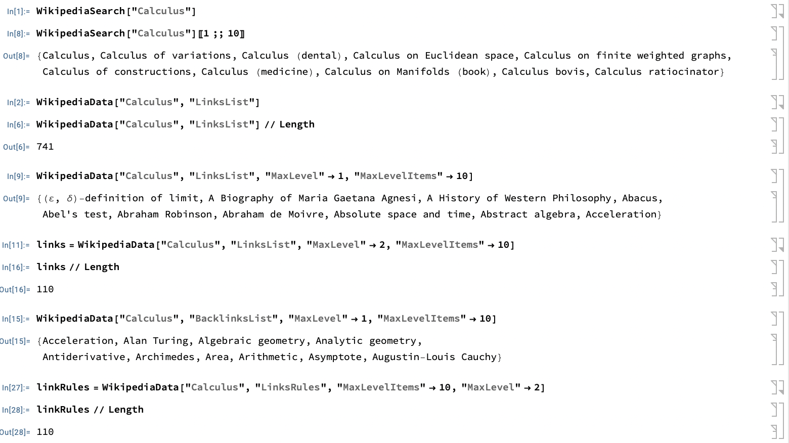
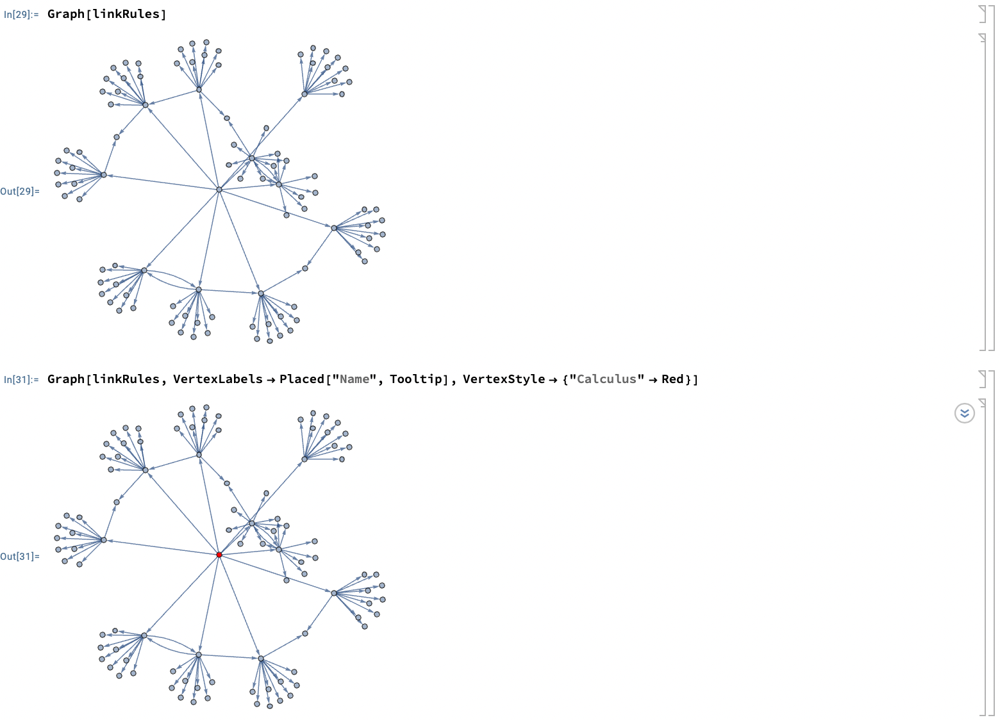
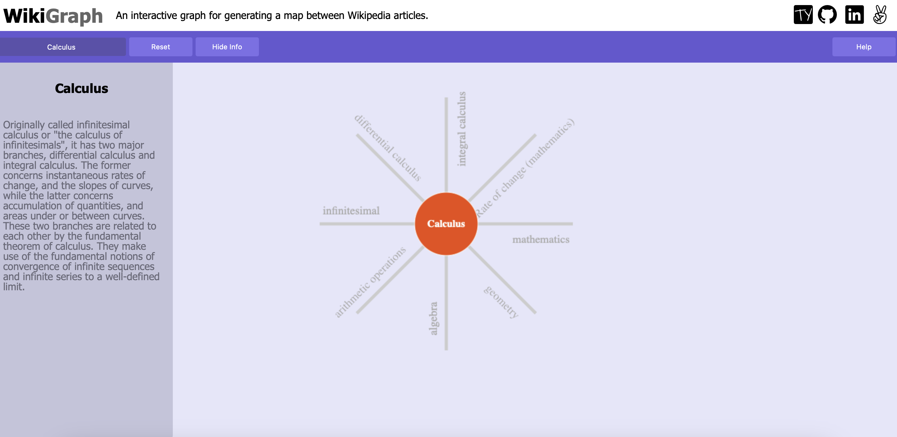
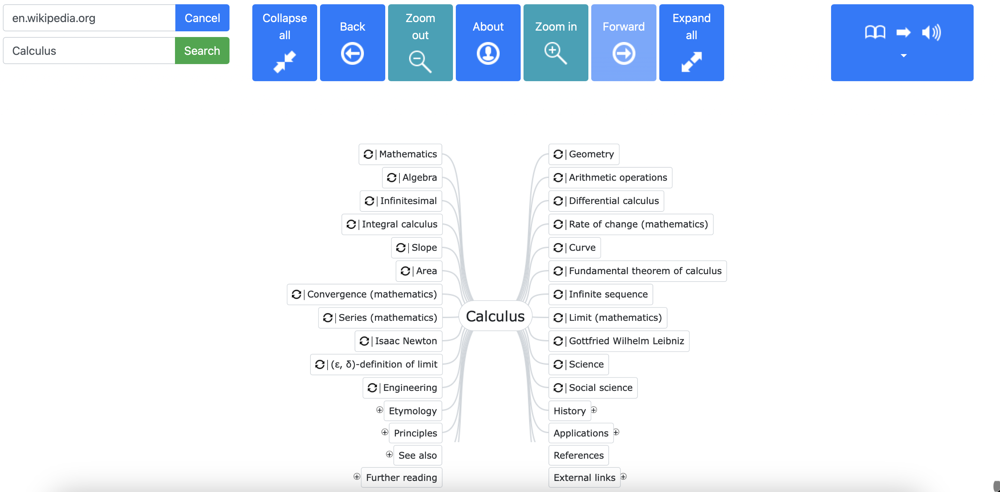
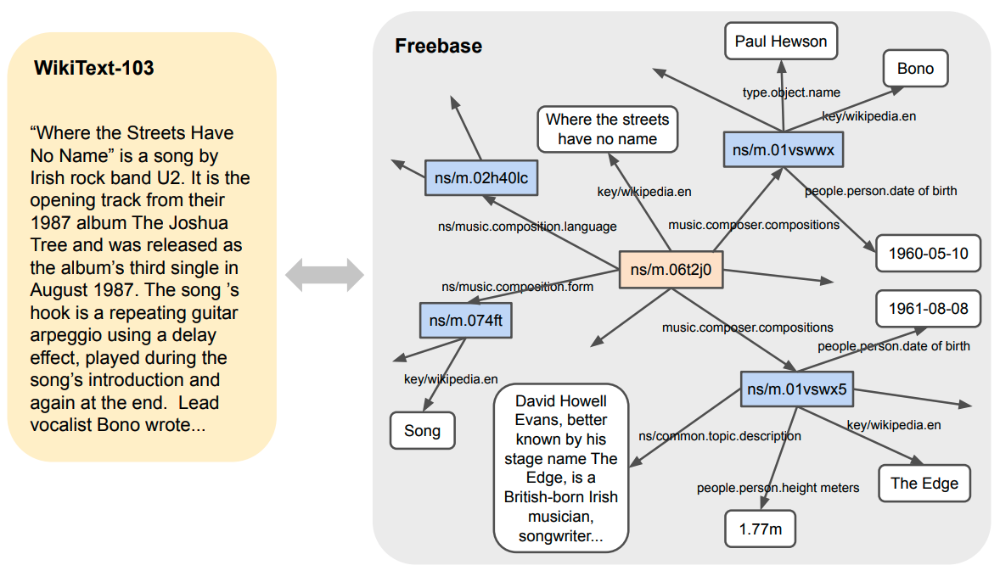

Knowledge Map Project Writeup
Arihant Gadgade
Date Published: 10/21/2024
When learning any new subject one always approaches the issue of what is the framework within which the subject is being discussed. For example math is the framework for physics, so if one wanted to learn about physics without knowing that math existed, they would be quite lost. Obviously that is a bit of a dramatic example. But the main idea is knowing where one is located within some information space. People also say this as knowing the prerequisites for a subject. We can do this for specific subjects as well, for example with quantum computation, it's essential to know linear algebra, computation and algorithms, and quantum mechanics. Then one can move up the knowledge hierarchy tree if one realized that they were missing a prerequisite, say linear algebra for QC. This allows one to move up and down the knowledge hierarchy tree. So essentially the issue is understanding where one is located within a knowledge tree.
So that led me to thinking it would be a good idea to build a super connected global metagraph of all knowledge. This was my Knowledge Map project, which I started in highschool. You can read more about my initial efforts here which will also give more on the philosophy behind this project: Knowledge Map About Page. So I finished out a beta of the project, then got distracted with school and such.
After a little hiatus I decided to try my hand at this idea again after finding out about React Flow, I thought that it would be a good tool to try and build KM with. So I created KM with a MERN stack and Reactflow:
I started thinking it may be a good idea to just create a Wikipedia wrapper where one searches for articles that are already created, then builds a graph for that, this way I could use Wikipedia's search functionality for people to go and locate which graph they want to find, instead of building out search functionality for my site.
Looking at wikipedia linkage with Mathematica:
 I knew there were certain projects that already tried their hand at creating knowledge graphs based on wikipedia linkage and such. The issue with these projects is that it only gives one such ontology for thinking about a subject, namely one based on linkage. But I want to see multiple such ontologies for the same subject from different domain experts, and see which are highest voted, and what's the difference in number of votes from the highest voted map to the second highest. Does one blow the other out of the water? Or are they neck and neck? Essentially I have epistemological qualms with there being a singular structure of knowledge. That’s where I believe the voting system shines.
WikiGraph: 
Wiki2Map: 
I also learned of the Freebase and Google Knowledge Graph, which are quite interesting in of themselves, but again didn’t structure the knowledge in the way I wanted, not to mention it's quite a different tool. Other notable mentions that are related are WikiGraph and WikiText. It should be noted, that this is a different WikiGraph than the one I showed earlier.

I began thinking about AI again, and realized that I could honestly probably save lots of manhours by waiting until AI gets better and then using the same approach I used with my KM beta: have the LLMs create the knowledge maps. I actually tried doing that with my knowledge graph website all the way back when ChatGPT first came out, I essentially just fed in the code of the website, and said “using that give me text in the form of the graphs I create and use that template to build out graphs for subjects”. And even with GPT3.5 it did a fairly decent job. They seem to be able to do the aggregation well, so given enough time they will probably close in on doing the aggregation by themselves, and it could save a lot of manhours. And I could go beyond this to get the different ontologies by asking the LLM to list out all the top ontologies and then create knowledge maps for each. Or ask it to create prerequisite knowledge graphs for the subject one is learning to get an idea of where one is in the knowledge graph.
So perhaps I may continue building this out, but for now I think I will conclude.